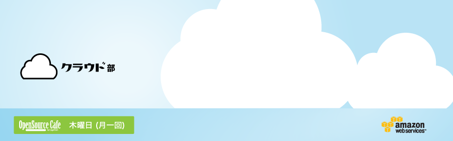

クラウドを使う人、中の人がもくもく仕事をしつつ、時々勉強会したり。
詳しくは、Facebookグループへ!
集って仕事/勉強したり、時にはセミナーを開いたりします。初めての人も気軽に、ベテランさんも準備なしで気楽に、参加できます。クラウド部は、月一回。いまのところ第一木曜日。
などなど、活用して下さい!
下北沢オープンソースCafeには、他にもいろんなプロジェクトがあります。覗いてみて下さいね :-)